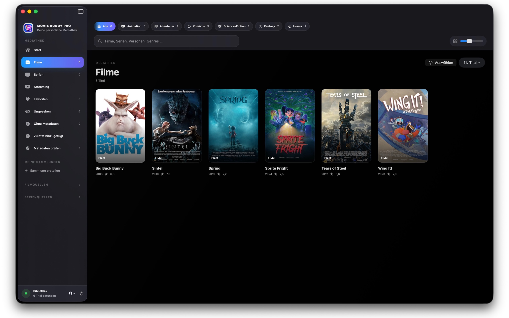
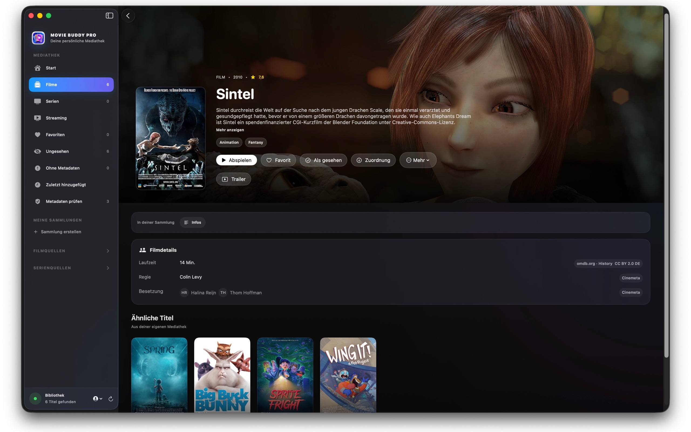
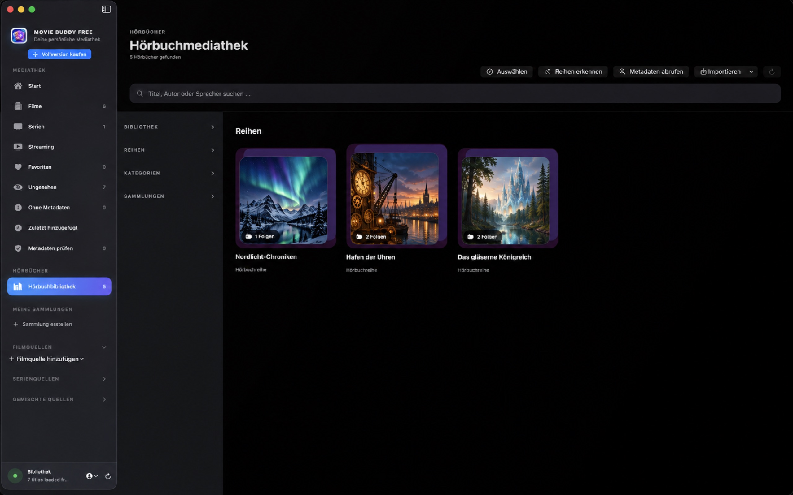

Flexible Quellen
Lokale Ordner, externe Laufwerke, im Finder eingebundene Netzwerkfreigaben und eigene Plex-, Jellyfin- oder Emby-Server.
Filme, Serien & Streaming. Alles an einem Ort.
Organisiere eigene Filme und Serien, spiele lokale Inhalte direkt ab und nutze Streamingdienste im integrierten Streaming-Bereich – alles an einem ruhigen, übersichtlichen Ort.


Eine Bibliothek statt vieler Orte
Movie Buddy katalogisiert deine vorhandenen Filme und Serien. Die App verkauft oder überträgt keine Medien und stellt keinen Streamingdienst bereit. Entfernst du eine Quelle aus Movie Buddy, bleiben die Originaldateien erhalten.
Für deine eigene Sammlung
Movie Buddy verbindet Organisation, Metadaten und Wiedergabe in einer macOS-App.
Lokale Ordner, externe Laufwerke, im Finder eingebundene Netzwerkfreigaben und eigene Plex-, Jellyfin- oder Emby-Server.
Titel, Jahr, Beschreibung, Genres, Beteiligte, Bewertungen sowie Poster und Hintergründe – mit sichtbarer Prüfung bei unklaren Treffern.
Lokale und kompatible Serverinhalte mit Fortschritt, Tonspuren, Untertiteln, Kapiteln, Geschwindigkeit und Bildsteuerung ansehen.
Streamingdienste direkt in Movie Buddy öffnen, anmelden und nutzen – oder jederzeit in den Standardbrowser wechseln.
Staffeln und Episoden ordnen, die nächste ungesehene Folge finden und zwischen Einzelwiedergabe und Autoplay wählen.
Eigener Fortschritt, Favoriten und Sammlungen pro Profil sowie optionaler iCloud-Abgleich ausgewählter persönlicher Daten.
Direkt aus dem Mac App Store
Echte Ansichten der persönlichen Mediathek, einer Filmdetailseite und der Hörbuchverwaltung aus der veröffentlichten macOS-App.

Movie Buddy arbeitet mit deinen vorhandenen Speicherorten. Quellen werden beim App-Start aktualisiert; weitere Aktualisierungen stößt du während der Sitzung selbst an.
Nach deiner ausdrücklichen macOS-Automation-Freigabe liest Movie Buddy sichtbare Metadaten deiner persönlichen Apple-TV-Kaufmediathek. Die Wiedergabe wird an die TV-App übergeben.
Movie Buddy liest keine Prime-Bibliothek automatisch aus. Du öffnest einen Titel, verknüpfst ihn manuell und bestätigst den Namen ausdrücklich.
Der integrierte Streaming-Bereich bringt deine bevorzugten Dienste direkt in Movie Buddy. Anmeldung, Berechtigungsprüfung und Wiedergabe erfolgen weiterhin beim jeweiligen Anbieter.
Klare Treffer können direkt zugeordnet werden. Bei Mehrdeutigkeiten entscheidest du selbst – und deine Korrekturen behalten Vorrang.
Der integrierte Player ist für lokale Dateien und kompatible Inhalte eigener Medienserver gedacht. Streamingdienste werden im eingebauten Streaming-Bereich oder alternativ im Standardbrowser wiedergegeben.
Datenschutz mit klarer Grenze
Movie Buddy hat keine eigenen Nutzerkonten, keine Analysewerkzeuge und kein Werbetracking.
Server-Zugangsdaten und Profil-PINs werden im macOS-Schlüsselbund gespeichert.
Fortschritt, Favoriten, Sammlungen und geschützte Zuordnungen können optional über dein persönliches iCloud-Konto synchronisiert werden.
Gespeicherte Websitedaten und Cookies lassen sich pro Dienst, nach Typ oder vollständig löschen.
Backups enthalten Organisation, Zuordnungen und Fortschritt – nicht deine Filme oder Serien.
Ein App-Reset entfernt lokale App-Daten, Einstellungen, Schlüsselbunddaten, Cookies, Cache und synchronisierte App-Daten – nicht deine Medienordner.
Datenquellen & Open Source
Online-Abfragen erfolgen nur für die jeweils benötigten Such- und Zuordnungsfunktionen. Trailer- und Untertitelsuchen werden von dir ausgelöst.
Lokale NFO-Dateien und Bilder, Cinemeta/Stremio, TVmaze, omdb.org (CC BY 2.0 DE) und Wikidata.
KinoCheck für von dir gestartete Trailersuchen sowie das OpenSubtitles-Community-Addon für von dir gestartete Untertitelsuchen.
EasyList und EasyPrivacy unter CC BY-SA 3.0 – optional und ausschließlich für von dir hinzugefügte Streaming-Websites.
VLCKit und libVLC, lizenziert unter der GNU LGPL 2.1.
Movie Buddy ist ein unabhängiges Produkt. Genannte Marken, Dienste und Logos gehören ihren jeweiligen Eigentümern. Eine Nennung bedeutet keine Partnerschaft oder Billigung.